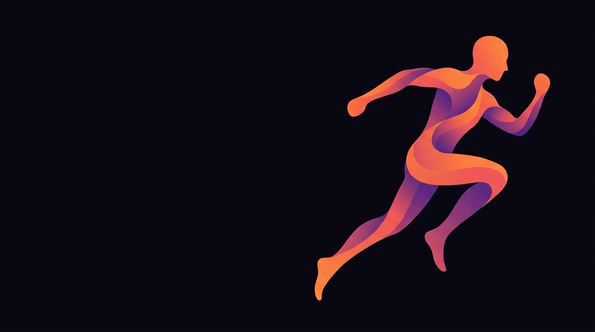
Innovación y Emprendimiento III · INACAP Rancagua
Caso real: Joselyn Toledo, kinesióloga independiente — Centro Médico InMotion
Francisco Ahumada · Claudia Cifuentes · Néstor Rivera · Benjamín Vera Yáñez
Septiembre 2026
01 · El caso
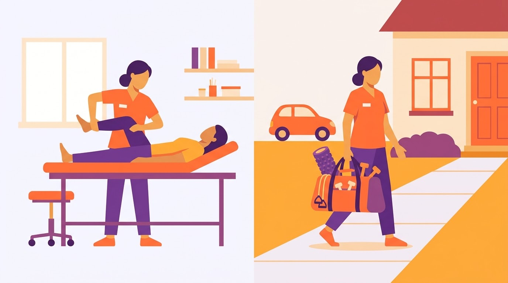
Centro Médico InMotion · ~1 año con empresa propia · 5 especialidades y 2 diplomados
Comisión 70/30 · agenda de secretaria
WhatsApp · auto y materiales propios
02 · Metodología
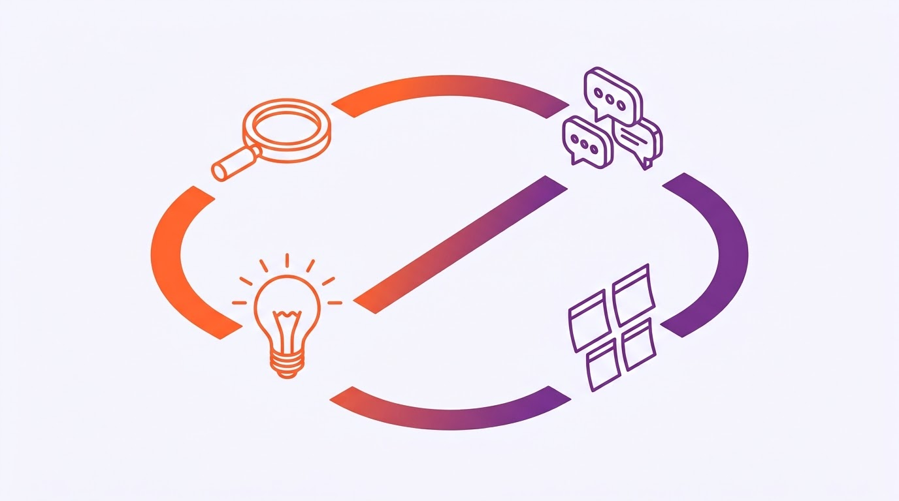
S1
Guion · entrevista · AEIOU
S2
2 expertos · PESTAL
S3
8 insights · antecedentes
S4
"¿Cómo podríamos…?" · Bitácora
03 · Guion de sondeo y card sorting
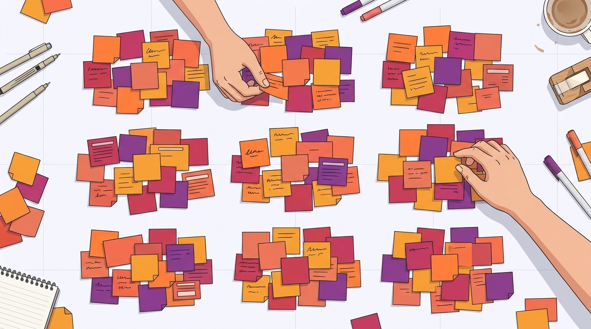
Las categorías no calzan 1:1 con el Business Model Canvas: "Agenda" cruza canales y relación; "Cobro" cruza costos e ingresos.
04 · Entrevista en profundidad
70/30
Comisión en clínica
45–60'
Sesión 1:1, su diferenciador
10–32h
Carga semanal variable
Gestión financiera: ingresos estacionales, control manual en Excel, sin proyección a 6–12 meses.
Kinesiólogos por comisión, grupos de adultos mayores, presoterapia.
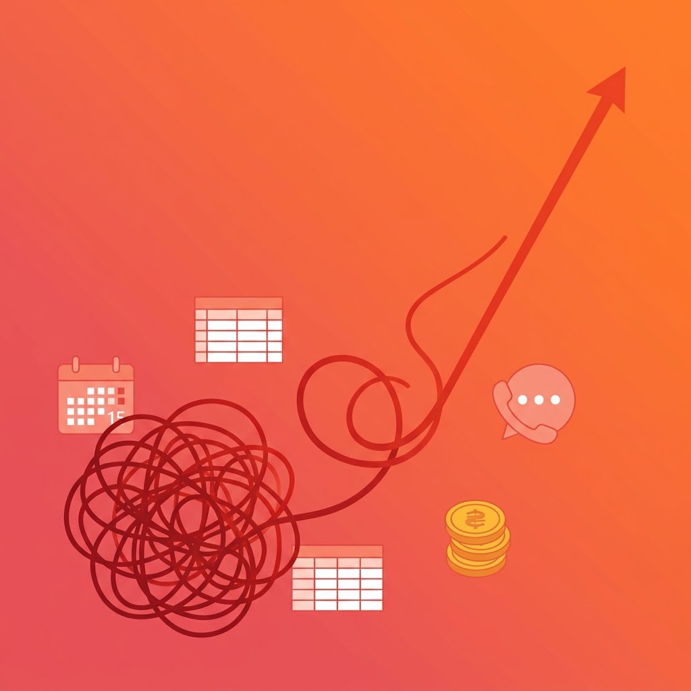
La voz de la usuaria
"Siento que igual tengo como un cierto desorden o falta de educación."
— Joselyn Toledo, sobre su gestión económica
"La carrera de kinesiología es muy inestable, muy inestable."
05 · Observación no participante
| Dimensión | Registro (autorreporte guiado) |
|---|---|
| Actividades | Sesiones 1:1 · coordinación por WhatsApp · traslados · registro en Excel al cierre del día |
| Entornos | Box de InMotion · hogares de pacientes · el auto como "oficina móvil" |
| Interacciones | Pacientes y familiares · secretaria de la clínica · contadora externa |
| Objetos | Celular (WhatsApp + calendario) · planilla Excel · materiales · vehículo · boletas |
| Usuarios | Directa: Joselyn · Indirectos: pacientes, secretaria, contadora, familiares |
Lectura: dos agendas que no se cruzan, y las finanzas se registran después, a mano.
06 · Entrevista a experta
Kinesióloga en hospital + atención particular (1–2 pacientes por día libre). 7 notas de voz por WhatsApp + seguimiento escrito, 22-09-2026 · 10 de 10 preguntas respondidas.
~1 h
al día ordenando su Excel de ingresos y gastos
$30–40 mil
CLP al mes que pagaría por agenda + dashboard
$0
paga por su agenda: Cal.com gratis + Google Calendar
"Para poder organizar el Excel sobre los ingresos y egresos que estoy teniendo me toma una hora actualmente diario."
— Catalina, kinesióloga · P09
06 · Entrevista a experta — contraste
| Hipótesis | Lo que dijo Catalina | Resultado |
|---|---|---|
| H2 Control financiero manual, sin proyección | Excel mensual a mano con movilización, equipamiento y tiempo. "Ha sido complejo". | Confirma |
| H5 Disposición a pagar | $30.000–$40.000 CLP/mes, sin que le sugiriéramos un precio. | Confirma |
| H1 La agenda es un dolor | Cal.com gratis + Google Calendar le funciona: ve hospital y particulares juntos. | Matiza |
| H4 Sin canal digital propio | Capta por landing page y boca a boca; re-agenda por Instagram y web. | Matiza |
| H3 Demanda estacional | Carga estable: la limita su tiempo libre, no la demanda (tiene sueldo fijo). | No aplica |
Aprendizaje: el valor no está en reemplazar la agenda, sino en conectarla con las finanzas. La solución debe integrarse con Cal.com, no competir con ella.
06 · Entrevista a experto — asesoría financiera
Asesor de profesionales independientes con boleta de honorarios. Entrevista realizada por Francisco Ahumada.
El saldo bancario es el "termómetro". Casi nadie proyecta flujo de caja.
No provisionar la Operación Renta: la retención se ve como "plata perdida".
$8.000–$25.000 CLP/mes, sin duplicar el costo de una agenda.
"Sin agenda confiable no hay dato de ingresos confiable, y sin dato de ingresos confiable no hay control financiero posible."
— Experto financiero · P10 (resumen de la entrevista)
07 · Análisis del entorno
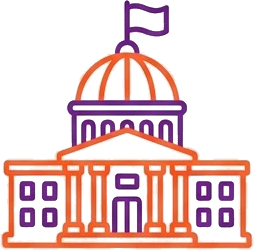
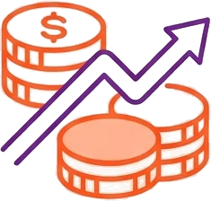
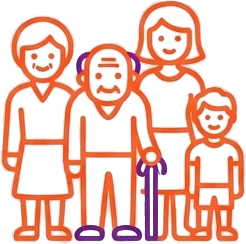
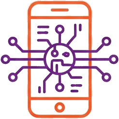
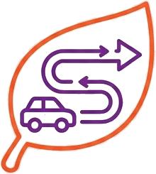
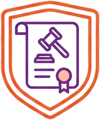
+ oportunidad · − amenaza
08 · Procesamiento de hallazgos
(−) Complejidad · (+) Impacto — victorias tempranas
I3 · El Excel como parche diario (U E O)
I5 · Costos invisibles del domicilio (U E O)
I1 · Ocupada no es lo mismo que rentable (U E O)
(+) Complejidad · (+) Impacto — prioridad
I2 · La agenda es el origen del dato financiero (U E O)
I6 · Inestabilidad sin memoria (U E O)
I4 · Impuestos como sorpresa (U E O)
(−) Complejidad · (−) Impacto
I7 · Fidelización informal por WhatsApp (U E O)
(+) Complejidad · (−) Impacto
I8 · Crecimiento sin plan (U E)
U = usuaria (Joselyn) · E = expertos (Catalina + asesor) · O = observación AEIOU
Insights clave
I2
Cada cita agendada es un ingreso proyectado que hoy se pierde. Es el insight raíz.
I1
No sabe cuánto gana en un mes promedio; decide sin datos.
I3
~1 h diaria de registro manual, al cierre de la jornada.
09 · Antecedentes nacionales e internacionales
| Caso | Agenda | Registro financiero | Costos por atención | Impuestos | Foco independiente | Agenda → finanzas |
|---|---|---|---|---|---|---|
| AgendaPro | ||||||
| Encuadrado | ||||||
| Reservo | ||||||
| Medilink | ||||||
| Cal.com | ||||||
| Cliniko | ||||||
| Jane App | ||||||
| Nubox | ||||||
| Oportunidad |
resuelto · parcial · no resuelto — ningún caso cruza agenda, costos e impuestos.
10 · Redefinición del desafío
¿Cómo podríamos aumentar la visibilidad financiera de kinesiólogas independientes con atención mixta, conectando su agenda con sus ingresos y costos, para reducir a la mitad el tiempo de registro manual (de ~1 h a menos de 30 min diarios) en Rancagua durante 2027?
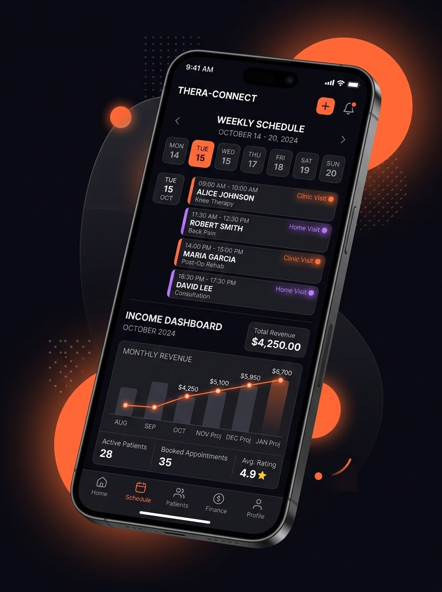
11 · Oportunidades seleccionadas
Se integra con Cal.com / Google Calendar: cada cita es ingreso proyectado, con costos e impuestos.
Un canal para el diferenciador, conectado a la agenda.
| Unidad | Trabajo futuro |
|---|---|
| U2 · Ideación | Requerimientos con Joselyn · flujo de registro < 30 min |
| U3 · Prototipo | Figma mobile-first · testeo con Joselyn y Catalina |
| U4 · Propuesta | Precio de entrada ~$20–25 mil/mes · pitch a Sercotec |
Conclusión
Usuaria, dos expertos, observación, entorno y antecedentes convergen en el mismo dolor: la gestión financiera y de agenda del profesional independiente.
Criterios 1.1.1 – 1.1.6 · Gracias